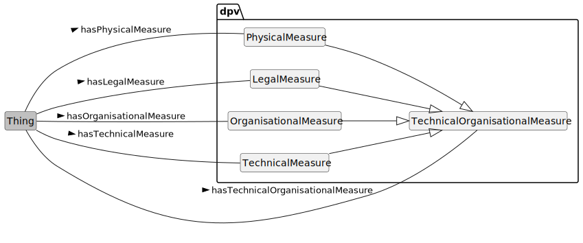

This document provides additional details and examples for technical and organisational measures in the Data Privacy Vocabulary [DPV], and is a companion to the [DPV] specification.
Contributing: The DPVCG welcomes participation to improve the DPV and associated resources, including expansion or refinement of concepts, requesting information and applications, and addressing open issues. See contributing guide for further information.
GitHub Issues are preferred for
discussion of this specification.
1. DPV and Related Resources
Data Privacy Vocabulary (DPV) Specification: is the base/core specification for the 'Data Privacy Vocabulary', which is extended for Personal Data [PD], Locations [LOC], Risk Management [RISK], Technology [TECH], and [AI]. Specific [LEGAL] extensions are also provided which model jurisdiction specific regulations and concepts - see the complete list of extensions. To support understanding and applications of [DPV], various guides and resources [GUIDES] are provided, including a [PRIMER]. A Search Index of all concepts from DPV and extensions is available.
[DPV] and related resources are published on GitHub. For a general overview of the Data Protection Vocabularies and Controls Community Group [DPVCG], its history, deliverables, and activities - refer to DPVCG Website. For meetings, see the DPVCG calendar.
The peer-reviewed article “Creating A Vocabulary for Data Privacy” presents a historical overview of the DPVCG, and describes the methodology and structure of the DPV along with describing its creation. An open-access version can be accessed here, here, and here. The article Data Privacy Vocabulary (DPV) - Version 2, accepted for presentation at the 23rd International Semantic Web Conference (ISWC 2024), describes the changes made in DPV v2.
2. Introduction

Figure 1Overview of Technical & Organisational Measures taxonomy in DPV (click to open in new window)
DPV's taxonomy of tech/org measures are structured into four groups representing TechnicalMeasure such as encryption or deidentification which operate at a technical level, OrganisationalMeasure such as policies and training which operate at an organisational level, LegalMeasure which are organisational measures with legal enforcement such as contracts and NDAs, and PhysicalMeasure which are associated with physical aspects such as environmental protection and physical security. Each of these is provided with a taxonomy that expands upon the core idea to provide a rich list of measures that are intended to protect personal data and technologies (and its associated entities and consequences).
dpv:TechnicalOrganisationalMeasure: Technical and Organisational measures used to safeguard and ensure good practices in connection with data and technologies
go to full definition
dpv:LegalMeasure: Legal measures used to safeguard and ensure good practices in connection with data and technologies
go to full definition
dpv:OrganisationalMeasure: Organisational measures used to safeguard and ensure good practices in connection with data and technologies
go to full definition
dpv:PhysicalMeasure: Physical measures used to safeguard and ensure good practices in connection with data and technologies
go to full definition
dpv:TechnicalMeasure: Technical measures used to safeguard and ensure good practices in connection with data and technologies
go to full definition
3. Technical Measures
Figure 2Overview of Technical Measures taxonomy in DPV (click to open in new window)
To express information about the technology implementing the technical measure, the concept Technology can be associated by using the relation isImplementedUsingTechnology. The [TECH] extension provides further concepts to represent technologies and their development and provision.
dpv:AccessControlMethod: Methods which restrict access to a place or resource
go to full definition
dpv:UsageControl: Management of usage, which is intended to be broader than access control and may cover trust, digital rights, or other relevant controls
go to full definition
dpv:ActivityMonitoring: Monitoring of activities including assessing whether they have been successfully initiated and completed
go to full definition
dpv:AuthenticationProtocols: Protocols involving validation of identity i.e. authentication of a person or information
go to full definition
dpv:BiometricAuthentication: Use of biometric data for authentication
go to full definition
dpv:CryptographicAuthentication: Use of cryptography for authentication
go to full definition
dpv:Authentication-ABC: Use of Attribute Based Credentials (ABC) to perform and manage authentication
go to full definition
dpv:Authentication-PABC: Use of Privacy-enhancing Attribute Based Credentials (ABC) to perform and manage authentication
go to full definition
dpv:HashMessageAuthenticationCode: Use of HMAC where message authentication code (MAC) utilise a cryptographic hash function and a secret cryptographic key
go to full definition
dpv:MessageAuthenticationCodes: Use of cryptographic methods to authenticate messages
go to full definition
dpv:MultiFactorAuthentication: An authentication system that uses two or more methods to authenticate
go to full definition
dpv:PasswordAuthentication: Use of passwords to perform authentication
go to full definition
dpv:SingleSignOn: Use of credentials or processes that enable using one set of credentials to authenticate multiple contexts.
go to full definition
dpv:ZeroKnowledgeAuthentication: Authentication using Zero-Knowledge proofs
go to full definition
dpv:AuthorisationProtocols: Protocols involving authorisation of roles or profiles to determine permission, rights, or privileges
go to full definition
dpv:CryptographicMethods: Use of cryptographic methods to perform tasks
go to full definition
dpv:AsymmetricCryptography: Use of public-key cryptography or asymmetric cryptography involving a public and private pair of keys
go to full definition
dpv:CryptographicAuthentication: Use of cryptography for authentication
go to full definition
dpv:Authentication-ABC: Use of Attribute Based Credentials (ABC) to perform and manage authentication
go to full definition
dpv:Authentication-PABC: Use of Privacy-enhancing Attribute Based Credentials (ABC) to perform and manage authentication
go to full definition
dpv:HashMessageAuthenticationCode: Use of HMAC where message authentication code (MAC) utilise a cryptographic hash function and a secret cryptographic key
go to full definition
dpv:MessageAuthenticationCodes: Use of cryptographic methods to authenticate messages
go to full definition
dpv:CryptographicKeyManagement: Management of cryptographic keys, including their generation, storage, assessment, and safekeeping
go to full definition
dpv:DifferentialPrivacy: Utilisation of differential privacy where information is shared as patterns or groups to withhold individual elements
go to full definition
dpv:DigitalSignatures: Expression and authentication of identity through digital information containing cryptographic signatures
go to full definition
dpv:HashFunctions: Use of hash functions to map information or to retrieve a prior categorisation
go to full definition
dpv:HomomorphicEncryption: Use of Homomorphic encryption that permits computations on encrypted data without decrypting it
go to full definition
dpv:PostQuantumCryptography: Use of algorithms that are intended to be secure against cryptanalytic attack by a quantum computer
go to full definition
dpv:PrivacyPreservingProtocol: Use of protocols designed with the intention of provided additional guarantees regarding privacy
go to full definition
dpv:PrivateInformationRetrieval: Use of cryptographic methods to retrieve a record from a system without revealing which record is retrieved
go to full definition
dpv:QuantumCryptography: Cryptographic methods that utilise quantum mechanical properties to perform cryptographic tasks
go to full definition
dpv:SecretSharingSchemes: Use of secret sharing schemes where the secret can only be reconstructed through combination of sufficient number of individuals
go to full definition
dpv:SecureMultiPartyComputation: Use of cryptographic methods for entities to jointly compute functions without revealing inputs
go to full definition
dpv:SymmetricCryptography: Use of cryptography where the same keys are utilised for encryption and decryption of information
go to full definition
dpv:TrustedComputing: Use of cryptographic methods to restrict access and execution to trusted parties and code
go to full definition
dpv:TrustedExecutionEnvironment: Use of cryptographic methods to restrict access and execution to trusted parties and code within a dedicated execution environment
go to full definition
dpv:ZeroKnowledgeAuthentication: Authentication using Zero-Knowledge proofs
go to full definition
dpv:DataBackupProtocols: Protocols or plans for backing up of data
go to full definition
dpv:DataSanitisationTechnique: Cleaning or any removal or re-organisation of elements in data based on selective criteria
go to full definition
dpv:DataRedaction: Removal of sensitive information from a data or document
go to full definition
dpv:Deidentification: Removal of identity or information to reduce identifiability
go to full definition
dpv:Anonymisation: Anonymisation is the process by which data is irreversibly altered in such a way that a data subject can no longer be identified directly or indirectly, either by the entity holding the data alone or in collaboration with other entities and information sources
go to full definition
dpv:Pseudonymisation: Pseudonymisation means the processing of personal data in such a manner that the personal data can no longer be attributed to a specific data subject without the use of additional information, provided that such additional information is kept separately and is subject to technical and organisational measures to ensure that the personal data are not attributed to an identified or identifiable natural person;
go to full definition
dpv:DeterministicPseudonymisation: Pseudonymisation achieved through a deterministic function
go to full definition
dpv:DocumentRandomisedPseudonymisation: Use of randomised pseudonymisation where the same elements are assigned different values in the same document or database
go to full definition
dpv:FullyRandomisedPseudonymisation: Use of randomised pseudonymisation where the same elements are assigned different values each time they occur
go to full definition
dpv:MonotonicCounterPseudonymisation: A simple pseudonymisation method where identifiers are substituted by a number chosen by a monotonic counter
go to full definition
dpv:RNGPseudonymisation: A pseudonymisation method where identifiers are substituted by a number chosen by a Random Number Generator (RNG)
go to full definition
dpv:DigitalRightsManagement: Management of access, use, and other operations associated with digital content
go to full definition
dpv:AsymmetricEncryption: Use of asymmetric cryptography to encrypt data
go to full definition
dpv:EncryptionAtRest: Encryption of data when being stored (persistent encryption)
go to full definition
dpv:EncryptionInTransfer: Encryption of data in transit e.g. when being transferred from one location to another, including sharing
go to full definition
dpv:EndToEndEncryption: Encrypted communications where data is encrypted by the sender and decrypted by the intended receiver to prevent access to any third party
go to full definition
dpv:SymmetricEncryption: Use of symmetric cryptography to encrypt data
go to full definition
dpv:InformationFlowControl: Use of measures to control information flows
go to full definition
dpv:SecurityMethod: Methods that relate to creating and providing security
go to full definition
dpv:DistributedSystemSecurity: Security implementations provided using or over a distributed system
go to full definition
dpv:DocumentSecurity: Security measures enacted over documents to protect against tampering or restrict access
go to full definition
dpv:FileSystemSecurity: Security implemented over a file system
go to full definition
dpv:HardwareSecurityProtocols: Security protocols implemented at or within hardware
go to full definition
dpv:IntrusionDetectionSystem: Use of measures to detect intrusions and other unauthorised attempts to gain access to a system
go to full definition
dpv:MobilePlatformSecurity: Security implemented over a mobile platform
go to full definition
dpv:NetworkSecurityProtocols: Security implemented at or over networks protocols
go to full definition
dpv:OperatingSystemSecurity: Security implemented at or through operating systems
go to full definition
dpv:PenetrationTestingMethods: Use of penetration testing to identify weaknesses and vulnerabilities through simulations
go to full definition
dpv:UseSyntheticData: Use of synthetic data to preserve privacy, security, or other effects and side-effects
go to full definition
dpv:VirtualisationSecurity: Security implemented at or through virtualised environments
go to full definition
dpv:VulnerabilityTestingMethods: Methods that assess or discover vulnerabilities in a system
go to full definition
dpv:WebBrowserSecurity: Security implemented at or over web browsers
go to full definition
dpv:WebSecurityProtocols: Security implemented at or over web-based protocols
go to full definition
dpv:WirelessSecurityProtocols: Security implemented at or over wireless communication protocols
go to full definition
4. Organisational Measures
Figure 3Overview of Organisational Measures taxonomy in DPV (click to open in new window)
Organisational Measures, represented by the concept OrganisationalMeasure, are measures that are undertaken at an organisational level i.e. by the human involved within the organisation. They involve aspects such as performing assessments, consultations, establishing governance procedures, providing notices, contracts, policies, record keeping, and other similar activities. Though such activities can utilise technologies to support their implementations, the measure is still primary categorised as being associated with 'organisational activities'. Organisational measure are indicated by using the relation hasOrganisationalMeasure.
dpv:Assessment: The document, plan, or process for assessment or determination towards a purpose e.g. assessment of legality or impact assessments
go to full definition
dpv:ComplianceAssessment: Assessment regarding compliance (e.g. internal policy, regulations)
go to full definition
dpv:LegalComplianceAssessment: Assessment regarding legal compliance
go to full definition
dpv:ConformanceAssessment: Assessment regarding conformance with standards or norms or guidelines or similar instruments
go to full definition
dpv:DataInteroperabilityAssessment: Measures associated with assessment of data interoperability
go to full definition
dpv:DataQualityAssessment: Measures associated with assessment of data quality
go to full definition
dpv:EffectivenessDeterminationProcedures: Procedures intended to determine effectiveness of other measures
go to full definition
dpv:LegitimateInterestAssessment: Indicates an assessment regarding the use of legitimate interest as a lawful basis by the data controller
go to full definition
dpv:CertificationSeal: Certifications, seals, and marks indicating compliance to regulations or practices
go to full definition
dpv:Certification: Certification mechanisms, seals, and marks for the purpose of demonstrating compliance
go to full definition
dpv:Seal: A seal or a mark indicating proof of certification to some certification or standard
go to full definition
dpv:Consultation: Consultation is a process of receiving feedback, advice, or opinion from an external agency
go to full definition
dpv:ConsultationWithAuthority: Consultation with an authority or authoritative entity
go to full definition
dpv:ConsultationWithDataSubject: Consultation with data subject(s) or their representative(s)
go to full definition
dpv:ConsultationWithDataSubjectRepresentative: Consultation with representative of data subject(s)
go to full definition
dpv:ConsultationWithDPO: Consultation with Data Protection Officer(s)
go to full definition
dpv:DataGovernance: Measures associated with topics typically considered to be part of 'Data Governance'
go to full definition
dpv:DataInteroperabilityManagement: Measures associated with management of data interoperability
go to full definition
dpv:DataInteroperabilityAssessment: Measures associated with assessment of data interoperability
go to full definition
dpv:DataInteroperabilityImprovement: Measures associated with improvement of data interoperability
go to full definition
dpv:DataInventoryManagement: Measures associated with management of data inventory or a data asset list
go to full definition
dpv:DataQualityManagement: Measures associated with management of data quality
go to full definition
dpv:DataQualityAssessment: Measures associated with assessment of data quality
go to full definition
dpv:DataQualityImprovement: Measures associated with improvement of data quality
go to full definition
dpv:DataSecurityManagement: Measures associated with management of data security
go to full definition
dpv:MetadataManagement: Measures associated with management of metadata
go to full definition
dpv:DigitalLiteracy: Providing skills, knowledge, and understanding to enable reading, writing, analysing, reasoning, and communicating regarding digital technologies and their implications
go to full definition
dpv:AILiteracy: Providing skills, knowledge, and understanding to enable reading, writing, analysing, reasoning, and communicating regarding AI
go to full definition
dpv:DataLiteracy: Providing skills, knowledge, and understanding to enable reading, writing, analysing, reasoning, and communicating regarding data
go to full definition
dpv:GovernanceProcedures: Procedures related to governance (e.g. organisation, unit, team, process, system)
go to full definition
dpv:AssetManagementProcedures: Procedures related to management of assets
go to full definition
dpv:ComplianceMonitoring: Monitoring of compliance (e.g. internal policy, regulations)
go to full definition
dpv:DisasterRecoveryProcedures: Procedures related to management of disasters and recovery
go to full definition
dpv:IncidentManagementProcedures: Procedures related to management of incidents
go to full definition
dpv:IncidentReportingCommunication: Procedures related to management of incident reporting
go to full definition
dpv:Policy: A guidance document outlining any of: procedures, plans, principles, decisions, intent, or protocols.
go to full definition
dpv:DataProcessingPolicy: Policy regarding data processing activities
go to full definition
dpv:MonitoringPolicy: Policy for monitoring (e.g. progress, performance)
go to full definition
dpv:RecertificationPolicy: Policy regarding repetition or renewal of existing certification(s)
go to full definition
dpv:ReviewProcedure: A procedure or process that reviews the correctness and validity of other procedures and policies e.g. to ensure continued validity, adequacy for intended purposes, and conformance of processes with findings
go to full definition
dpv:ReviewImpactAssessment: Procedures to review impact assessments in terms of continued validity, adequacy for intended purposes, and conformance of processes with findings
go to full definition
dpv:StandardsConformance: Purposes associated with activities undertaken to ensure or achieve conformance with standards
go to full definition
dpv:GuidelinesPrinciple: Guidelines or Principles regarding processing and operational measures
go to full definition
dpv:CodeOfConduct: A set of rules or procedures outlining the norms and practices for conducting activities
go to full definition
dpv:DesignStandard: A set of rules or guidelines outlining criterias for design
go to full definition
dpv:Guideline: Practices that specify how activities must be conducted
go to full definition
dpv:Principle: A representation of values or norms that must be taken into consideration when conducting activities
go to full definition
dpv:PrivacyByDefault: Practices regarding setting the default configurations of information and services to implement data protection and privacy (synonymous with Data Protection by Default)
go to full definition
dpv:PrivacyByDesign: Practices regarding incorporating data protection and privacy in the design of information and services (synonymous with Data Protection by Design)
go to full definition
dpv:Notice: A notice is an artefact for providing information, choices, or controls
go to full definition
dpv:DataTransferNotice: Notice for the legal entity for the transfer of its data
go to full definition
dpv:PrivacyNotice: Represents a notice or document outlining information regarding privacy
go to full definition
dpv:ConsentNotice: A Notice for information provision associated with Consent
go to full definition
dpv:SecurityIncidentNotice: A notice providing information about security incident(s)
go to full definition
dpv:DataBreachNotice: A notice providing information about data breach(es) i.e. unauthorised transfer, access, use, or modification of data
go to full definition
dpv:Notification: Notification represents the provision of a notice i.e. notifying
go to full definition
dpv:SecurityIncidentNotification: Notification of information about security incident(s)
go to full definition
dpv:DataBreachNotification: Notification of information about data breach(es) i.e. unauthorised transfer, access, use, or modification of data
go to full definition
dpv:RecordsOfActivities: Records of activities within some context such as maintenance tasks or governance functions
go to full definition
dpv:RightsManagement: Methods associated with rights management where 'rights' refer to controlling who can do what with a resource
go to full definition
dpv:DataSubjectRightsManagement: Methods to provide, implement, and exercise data subjects' rights
go to full definition
dpv:IPRManagement: Management of Intellectual Property Rights with a view to identify and safeguard and enforce them
go to full definition
dpv:PermissionManagement: Methods to obtain, provide, modify, and withdraw permissions along with maintaining a record of permissions, retrieving records, and processing changes in permission states
go to full definition
dpv:ConsentManagement: Methods to obtain, provide, modify, and withdraw consent along with maintaining a record of consent, retrieving records, and processing changes in consent states
go to full definition
dpv:Safeguard: A safeguard is a precautionary measure for the protection against or mitigation of negative effects
go to full definition
dpv:RegulatorySandbox: Mechanism used by regulators and businesses for gauging the compatibility of regulations and innovative products, particularly in the context of digitalisation, in a controlled real-world environment with appropriate safeguards in place
go to full definition
dpv:SafeguardForDataTransfer: Represents a safeguard used for data transfer. Can include technical or organisational measures.
go to full definition
dpv:SecurityProcedure: Procedures associated with assessing, implementing, and evaluating security
go to full definition
dpv:AuthorisationProcedure: Procedures for determining authorisation through permission or authority
go to full definition
dpv:CredentialManagement: Management of credentials and their use in authorisations
go to full definition
dpv:IdentityManagementMethod: Management of identity and identity-based processes
go to full definition
dpv:BackgroundChecks: Procedure where the background of an entity is assessed to identity vulnerabilities and threats due to their current or intended role
go to full definition
dpv:DataSecurityManagement: Measures associated with management of data security
go to full definition
dpv:SecureProcessingEnvironment: A physical or virtual environment supported by organisational means that integrates security and compliance requirements and allows supervising data processing actions
go to full definition
dpv:SecurityRoleProcedures: Procedures related to security roles
go to full definition
dpv:ThirdPartySecurityProcedures: Procedures related to security associated with Third Parties
go to full definition
dpv:StaffTraining: Practices and policies regarding training of staff members
go to full definition
dpv:CybersecurityTraining: Training methods related to cybersecurity
go to full definition
dpv:DataProtectionTraining: Training intended to increase knowledge regarding data protection
go to full definition
dpv:EducationalTraining: Training methods that are intended to provide education on topic(s)
go to full definition
dpv:ProfessionalTraining: Training methods that are intended to provide professional knowledge and expertise
go to full definition
dpv:SecurityKnowledgeTraining: Training intended to increase knowledge regarding security
go to full definition
dpv:SupportEntityDecisionMaking: Supporting entities, including individuals, in making decisions
go to full definition
dpv:SupportContractNegotiation: Supporting entities, including individuals, with negotiating a contract and its terms and conditions
go to full definition
dpv:SupportExchangeOfViews: Supporting individuals and entities in exchanging views e.g. regarding data processing purposes for their best interests
go to full definition
dpv:SupportInformedConsentDecision: Supporting individuals with making a decision regarding their informed consent
go to full definition
4.1 Assessments
Assessment refers to a document, plan, or process for assessment or determination towards a purpose. For example, legal compliance assessment establishes compliance with the law and lawfulness. Similarly, privacy assessments concern privacy, risk assessments concern risks, and impact assessments concern impacts of operations and technologies. To represent such commonly utilised assessments, DPV provides the following concepts:
Assessments which refer to risks and/or impacts, such as risk assessment, privacy impact assessment, data protection impact assessment, and data breach impact assessment are defined in the 'risk' module within DPV due to their role within the risk management processes.
4.2 Notices
Notice represents notification of information i.e. providing information about something to an entity. Notices are commonly used to communicate in situations such as providing information about privacy practices (PrivacyNotice), requests for informed consent (ConsentNotice), informing about security incidents (SecurityIncidentNotice) such as data breaches (DataBreachNotice), or to describe the transfer of data (DataTransferNotice). Notices are associated by using the relation hasNotice.
Notices may contain only information, or also have interactive components intended to make decisions, offer choices and controls, or otherwise carry out processes that go beyond mere provision of information.
4.2.1 Consent Notice
Requirements for informed consent require provision of information before the consent is obtained so as to inform the individual. This information is typically provided through a notice, which can be specified using the concept ConsentNotice and the relation hasNotice. As with the previous notice example, a consent notice can be a link to the actual notice document or web-page, or contain description of the notice contents regarding processing of personal data.
Note: Guide for implementing privacy notices for consent as per ISO/IEC 29184:2020
4.3 Policies
Policy represents a guidance document outlining procedures, plans, principles, decisions, intent, or protocols. It is associated using the relation hasPolicy. DPV provides concepts to represent policies regarding:
In addition to the above data related policies, DPV also defines DataJurisdictionPolicy to specify jurisdictional requirements, and DataReusePolicy for specifying how data can be further used for purposes other than its initial purpose.
LoggingPolicy regarding logging of information (i.e. maintaining logs and records as a technical concept).
MonitoringPolicy for how something should be monitored e.g. other policies and activities.
RecertificationPolicy for how often or when certification should be renewed or checked for conformance.
Note: Privacy Policy vs Privacy Notice
DPV does not provide the concept PrivacyPolicy, but instead suggests to use the better expressed and less ambiguous term - PrivacyNotice. This is to explicitly denote that the role of what is considered common as a "privacy policy" is actually a "notice" intended for end users and other individuals, instead of being an internal policy document for how the company should approach 'privacy'. More information about notices is provided in the next section.
4.4 Record Keeping
Records, or storing of information with the intention to use it in the future, are an important obligation for several legal as well as other obligations related to data protection and privacy. To support record keeping, the concept RecordsOfActivities is provided. Specific records are represented with the concepts:
Note: Records as documentation vs Records as processing operation
DPV also contains the Record concept as a type of Processing operation, and RecordManagement as a type of Purpose. The former refers to recording of personal data as a means to obtain it (e.g. record a conversation), while the latter relates to the use of personal data towards creating records and managing them as a purpose (e.g. record consent was given). These are distinct, though relevant to the organisational measures related to record keeping.
Record keeping may require further vocabularies to represent details such as various temporal annotations, provenance, statuses, or other contextual information that is not possible or provided for by DPV's concepts. In such cases, we suggest utilising other standardised vocabularies where applicable.
Note: Guide on implementing Consent Records using DPV
5. Legal Measures
LegalMeasure represents organisational measures which have a legal enforcement mechanism or are legally defined/interpreted. For example, through contracts, NDAs, agreements. They are associated by using hasLegalMeasure.
dpv:ConfidentialityAgreement: Agreements that enforce confidentiality for e.g. to protect business, professional, or company secrets
go to full definition
dpv:ContractualTerms: Contractual terms governing data handling within or with an entity
go to full definition
dpv:Licence: A Legal Document providing permission to utilise data or resource and outlining the conditions under which such use is considered valid
go to full definition
dpv:DataProcessingAgreement: An agreement outlining conditions, criteria, obligations, responsibilities, and specifics for carrying out processing of data
go to full definition
dpv:ControllerProcessorAgreement: An agreement outlining conditions, criteria, obligations, responsibilities, and specifics for carrying out processing of data between a Data Controller and a Data Processor
go to full definition
dpv:JointDataControllersAgreement: An agreement outlining conditions, criteria, obligations, responsibilities, and specifics for carrying out processing of data between Controllers within a Joint Controllers relationship
go to full definition
dpv:SubProcessorAgreement: An agreement outlining conditions, criteria, obligations, responsibilities, and specifics for carrying out processing of data between a Data Processor and a Data (Sub-)Processor
go to full definition
dpv:ThirdPartyAgreement: An agreement outlining conditions, criteria, obligations, responsibilities, and specifics for carrying out processing of data between a Data Controller or Processor and a Third Party
go to full definition
dpv:NDA: Non-disclosure Agreements e.g. preserving confidentiality of information
go to full definition
dpv:StatisticalConfidentialityAgreement: An agreement outlining conditions, criteria, obligations, responsibilities, and specifics for classification and management of 'confidential data' based on a statistical framework
go to full definition
6. Physical Measures
PhysicalMeasure represents measures that have a physical implementation - such as physical access control or environment controls for floods, power outages, etc. They are associated by using hasPhysicalMeasure.
dpv:EnvironmentalProtection: Physical protection against environmental threats such as fire, floods, storms, etc.
go to full definition
dpv:PhysicalAccessControlMethod: Access control applied for physical access e.g. premises or equipment
go to full definition
dpv:PhysicalAuthentication: Physical implementation of authentication e.g. by matching the person to their ID card
go to full definition
dpv:PhysicalAuthorisation: Physical implementation of authorisation e.g. by stamping a visitor pass
go to full definition
dpv:PhysicalDeviceSecurity: Physical protection for devices and equipment
go to full definition
dpv:PhysicalInterceptionProtection: Physical protection against interception e.g. by posting a guard
go to full definition
dpv:PhysicalInterruptionProtection: Physical protection against interruptions e.g. electrical supply interruption
go to full definition
dpv:PhysicalNetworkSecurity: Physical protection for networks and networking related infrastructure e.g. by isolating networking equipments
go to full definition
dpv:PhysicalSecureStorage: Physical protection for storage of information or equipment e.g. secure storage for files
go to full definition
dpv:PhysicalSupplySecurity: Physically securing the supply of resources
go to full definition
dpv:PhysicalSurveillance: Physically monitoring areas via surveillance
go to full definition
7. Security
All technical and organisational measures are intended, by definition, to provide better security and handling of personal data and its associated processing and other activities. In DPV's taxonomy, some measures directly and specifically relate to security as their topic, whilst others provide their intended benefit indirectly. For example, the concept SecurityAssessments is an organisational measure relating to how security is assessed (and thus ultimately improved) - and is directly associated with security as a topic. Whereas a concept such as ProfessionalTraining relates to measures that are not directly tied to security, but can be associated in cases where the training is related to security or specific security measures or risks (e.g. cybersecurity data breach mitigations). The purpose EnforceSecurity provides a common umbrella term for personal data that is utilised for enacting and enforcing security measures, such as for authorisation and authentication.
Technical measures that relate specifically to security include SecurityMethod for providing security, and its subtypes for DocumentSecurity, FileSystemSecurity, HardwareSecurityProtocols, IntrusionDetectionSystem, MobilePlatformSecurity, NetworkSecurityProtocols, OperatingSystemSecurity, WebBrowserSecurity, WebSecurityProtocols, and more. Organisational measures that relate specifically to security include SecurityProcedure, and its subtypes for BackgroundChecks, CybersecurityAssessments, CybersecurityTraining, SecurityAssessments, and more.
8. Data Processing Agreements
The term Data Processing Agreement refers to a broad concept related to contracts or agreements between entities representing conditions regarding the processing of (personal-)data. This can include ad-hoc 'data handling' policies such as NDAs, embargoes, and enforcement of practices, as well as more formal and legal binding contractual obligations such as those between a Controller and a Processor.
To represent such concepts, DPV provides LegalAgreement, along with subtypes for NDA (Non-disclosure agreements), ContractualTerms, and DataProcessingAgreement. In these, it is important to remember that while contract can also be as a form of legal basis, the concept represented here is not necessarily the same contract as that is used to justify the processing of personal data with a data subject. Instead, contracts are a broad category representing contractual terms governing data handling within or with an entity.
For representing specific agreements between entities (other than those with data subjects - which are covered in Legal Basis taxonomy), DPV provides the following types of agreements:
ControllerProcessorAgreement: An agreement between a Controller and a Processor, where the Controller instructs the Processor(s) to carry out processing on its behalf.
JointControllersAgreement: An agreement between two or more Controllers to act as a 'Joint Controller'.
SubProcessorAgreement: An agreement between two or more Processors where one Processor instructs another to carry out processing on its behalf.
ThirdPartyAgreement: An agreement between a Data Controller or a Data Processor, and a Third Party. Note that this is a loosely defined concept, as depending on the jurisdiction, this relationship may result in the Third Party being a Data Controller or a Joint Data Controller.
To indicate the entities involved in an agreement, the relation hasEntity can be used, or relations associated with specific roles to indicate contextuality. For example, using hasDataController with a ControllerProcessorAgreement denotes the Data Controller for that agreement.
9. Data Transfer Safeguards
While all technical and organisational measures are intended to safeguard personal data and its associated activities, there may be contextual or use-case requirements to explicitly indicate safeguards against or for specific criteria. To enable such use, DPV provides the concept Safeguard and its subtype SafeguardForDataTransfer for indicating application when data is being transferred. Through these, it is possible to represent aspects such as policies for data transfers, specific measures such as encryption being applied, and other pertinent information in combination with DPV's concepts from technical and organisational measures.
Anonymisation is the process by which data is irreversibly altered in such a way that a data subject can no longer be identified directly or indirectly, either by the entity holding the data alone or in collaboration with other entities and information sources
Methods to obtain, provide, modify, and withdraw consent along with maintaining a record of consent, retrieving records, and processing changes in consent states
Source
Date Created
2024-04-14
Contributors
Beatriz Esteves, Harshvardhan J. Pandit, Georg P. Krog
Deletion and Erasure are distinct activities where deletion refers to logical removal of data with the possibility of retrieval whereas erasure refers to destruction of data such that it cannot be retrieved. See dpv:DataErasurePolicy
Erasure or data destruction or secure removal of data refers to irreversible erasure of data. See dpv:DataDeletion for reversible or logical deletion of data
Policy specifying jurisdictional requirements for data processing
Usage Note
Jurisdictional requirements can refer to data being stored within specific jurisdictions, or that data must be in line with jurisdictional laws and norms
This only refers to the policy or plan or procedure describing how the data processing should be conducted. To represent the granular details, see further concepts e.g. dpv:DataStoragePolicy to describe policy regarding storage, or dpv:DataStorageCondition to represent information within the policy for how information should be stored
Policy regarding reuse of data i.e. using data for purposes other than its initial purpose
Usage Note
This policy can be used to describe the procedures associated with undertaking such reuse of data, for example to assess its legality and the compatibility of the initial and subsequent purposes
Measures associated with management of data security
Usage Note
Examples of data security management are assessing the appropriate security controls such as encryption, testing the implemented security controls, and ensuring it is protected and safeguarded from unintended actions
Methods to provide, implement, and exercise data subjects' rights
Usage Note
This concept only concerns the organisational management of rights, and does not represent the rights themselves - especially where such 'rights' are legally recognised or defined for the data subject or individual. The concept dpv:DataSubjectRight is provided to represent such legal rights.
Source
Date Created
2024-04-14
Contributors
Beatriz Esteves, Harshvardhan J. Pandit, Georg P. Krog
Providing skills, knowledge, and understanding to enable reading, writing, analysing, reasoning, and communicating regarding digital technologies and their implications
Examples of metadata management include assessing which metadata are required or being used by technology, assessing their potential inclusion as personal data, and implementing a metadata based solution to manage data
A notice is an artefact for providing information, choices, or controls
Usage Note
Notice refers to the information whereas Notification refers to the provision of that notice. In several cases, they are used interchangeably - for example Privacy Notice as a measure or control refers to both the information as well as the act of making it available. For 'active' contexts where this distinction is important, e.g. data breach notifications, see Notification concept.
Notification represents the provision of a notice i.e. notifying
Usage Note
Notice refers to the information whereas Notification refers to the provision of that notice. The distinction is important as there are specific obligations associated with notice and notifications. For example, a data breach notice refers to the information about the breach intended to be provided to another entity, whereas notification refers to the act of providing the entity with the notice
Methods to obtain, provide, modify, and withdraw permissions along with maintaining a record of permissions, retrieving records, and processing changes in permission states
Usage Note
Permission is a broader concept than '(Informed) Consent' as consent when used as a legal basis has specific requirements to be valid. For management of consent, see the concept dpv:ConsentManagement
Source
Date Created
2024-04-14
Contributors
Beatriz Esteves, Harshvardhan J. Pandit, Georg P. Krog
Practices regarding setting the default configurations of information and services to implement data protection and privacy (synonymous with Data Protection by Default)
Date Created
2019-04-05
Date Modified
2024-04-14
Contributors
Axel Polleres, Rob Brennan, Harshvardhan J. Pandit, Mark Lizar
Pseudonymisation means the processing of personal data in such a manner that the personal data can no longer be attributed to a specific data subject without the use of additional information, provided that such additional information is kept separately and is subject to technical and organisational measures to ensure that the personal data are not attributed to an identified or identifiable natural person;
Mechanism used by regulators and businesses for gauging the compatibility of regulations and innovative products, particularly in the context of digitalisation, in a controlled real-world environment with appropriate safeguards in place
A procedure or process that reviews the correctness and validity of other procedures and policies e.g. to ensure continued validity, adequacy for intended purposes, and conformance of processes with findings
A Record of Processing Activities (ROPA) is a document detailing processing activities
Usage Note
ROPA under GDPR Art.30 has specific requirements regarding the information to be maintained. Additionally, Data Protection Authorities also provide additional information guidelines for information to be maintained in a ROPA. For more information see https://w3id.org/dpcat
A physical or virtual environment supported by organisational means that integrates security and compliance requirements and allows supervising data processing actions
DPV uses the following terms from [RDF] and [RDFS] with their defined meanings:
rdf:type to denote a concept is an instance of another concept
rdfs:Class to denote a concept is a Class or a category
rdfs:subClassOf to specify the concept is a subclass (subtype, sub-category, subset) of another concept
rdf:Property to denote a concept is a property or a relation
The following external concepts are re-used within DPV:
11. Contributors
The following people have contributed to this vocabulary. The names are ordered alphabetically. The affiliations are informative do not represent formal endorsements. Affiliations may be outdated. The list is generated automatically from the contributors listed for defined concepts.
Arthit Suriyawongkul (ADAPT Centre, Trinity College Dublin)
Axel Polleres (Vienna University of Economics and Business)
Beatriz Esteves (IDLab, IMEC, Ghent University)
Bud Bruegger (Unabhängige Landeszentrum für Datenschutz Schleswig-Holstein)
Damien Desfontaines ()
David Hickey (Dublin City University)
Delaram Golpayegani (ADAPT Centre, Trinity College Dublin)
Elmar Kiesling (Vienna University of Technology)
Fajar Ekaputra (Vienna University of Technology)
Georg P. Krog (Signatu AS)
Harshvardhan J. Pandit (ADAPT Centre, Dublin City University)
Javier Fernández (Vienna University of Economics and Business)
Julian Flake (University of Koblenz)
Mark Lizar (OpenConsent/Kantara Initiative)
Maya Borges ()
Paul Ryan (Uniphar PLC)
Piero Bonatti (Università di Napoli Federico II)
Rana Saniei (Universidad Politécnica de Madrid)
Rob Brennan (University College Dublin)
Rudy Jacob (Proximus)
Simon Steyskal (Siemens)
Steve Hickman ()
Funding Acknowledgements
Funding Sponsors
The DPVCG was established as part of the SPECIAL H2020 Project, which received funding from the European Union’s Horizon 2020 research and innovation programme under grant agreement No. 731601 from 2017 to 2019.
Harshvardhan J. Pandit was funded to work on DPV from 2020 to 2022 by the Irish Research Council's Government of Ireland Postdoctoral Fellowship Grant#GOIPD/2020/790.
The ADAPT SFI Centre for Digital Media Technology is funded by Science Foundation Ireland through the SFI Research Centres Programme and is co-funded under the European Regional Development Fund (ERDF) through Grant#13/RC/2106 (2018 to 2020) and Grant#13/RC/2106_P2 (2021 onwards).
Funding Acknowledgements for Contributors
The contributions of Harshvardhan J. Pandit have been made with the financial support of Science Foundation Ireland under Grant Agreement No. 13/RC/2106_P2 at the ADAPT SFI Research Centre.